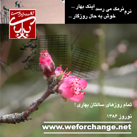

پذيرش > مقالات > خارج از چارچوب > چرا استقلال جنبش زنان و مردمی بودن آن "نقد" می شود؟


 چرا استقلال جنبش زنان و مردمی بودن آن "نقد" می شود؟ چرا استقلال جنبش زنان و مردمی بودن آن "نقد" می شود؟
29 اسفند 1385 - نوشته ی پویا - نسخه قابل چاپ
پس از دستگیری 33 نفر از فعالان جنبش زنان و آزادی 31 نفر از آنان، این روزها در وبلاگها و سایت ها موضوعی دربارهی حرکتهای جنبش زنان مطرح شده و عده ای در نقد این حرکتها اینجا و آنجا نوشتهاند، عدهای در تایید آن و عدهای هم در مخالفت با آن. من قصد ندارم نظرم را دربارهی نوشتهی خاصی بنویسم. اما دیدگاهی را که میخواهد با استفاده از شرایط امروز به شکلی "معصومانه" و "خیرخواهانه" خودش را جا بیاندازد نقد میکنم.
این دیدگاه، روی دو تا از ویژگیهای جنبش زنان که به نظر من برای نهادینه شدن کاری که میکنند خیلی مهم هستند، متمرکز است. یکی استقلال جنبش زنان وبویژه تلاشهایی مانند کمپین 1 میلیون امضا، تدوین منشور و یا لغو سنگسار، از نهادها و مراجع رسمی قدرت و دیگری، بردن ِ گفتمان «تبعیض جنسیتی» به میان مردم. به نظر من این ویژگیها از این نظر مهم هستند:
اولی موجب میشود تا جنبش زنان به صورت دنباله و چرخ کمکی این یا آن نهاد و حزب رسمی در نیاید. گروهها و احزاب رسمی و غیر رسمی که در کشور ما وجود دارند بیشتر محفلهایی برای گروههای مختلف در درون دستگاه قدرت هستند تا یک حزب واقعی که در درون جامعه پایگاهی داشته باشد. اگر هم مردم در دورهای اقبالی به یکی از این گروهها (مثلا حزب مشارکت) نشان دادهاند بخاطر امیدشان به ادامهی جنبش اصلاحات بوده است و نه اینکه آن گروه و حزب، فعالیتی در میان مردم یا برنامهی روشنی برای کارش داشته باشد. تجربهی 8 سال اصلاحات هم به ما نشان داد که این گروهها و تشکلها از رای مردم برای به قدرت رسیدن در مقابل جناح رقیب استفاده میکنند و بقیهی کار را که ادارهی جامعه و تعیین سیاستها باشد، ترجیح میدهند در پشت درهای بسته و بده بستانهای سیاسی با رقیبانشان حل و فصل کنند.
وقتی یکی از این "منتقدین" به زنان مینویسد: "شما اگر خیلی ادعا دارید بروید و کاری کنید که به مجلس بروید، آن قانون را تصویب کنید، با زنان میانهروی جناح راست وارد تعامل و رایزنی شوید و شورای نگهبان و رهبر را برای پذیرش این قانون آماده کنید"، منظور در واقع این است که جنبش خودتان را به احزابی که در قدرت یا حاشیهی قدرت هستند وصل کنید و آنوقت به مجلس هم خواهید رفت و ...
اما این نظر نمیگوید که تجربه نشان داده که اولا کسی با شعار رفع تبعیض جنسیتی وارد مجلس نخواهد شد و از آن مهمتر این که آن گروهها و احزاب به این طور خواستها تا آنجا پایبند هستند که بتوانند از اقبال مردم استفاده کنند و رایی بگیرند. در عمل حتی آن موقع که اکثریت مطلق مجلس ششم و تمام قوهی مجریه را در اختیار داشتند نتوانستند حتی یکی از لایحههایی را ارائه داده بودند و فکر میکردند در چارچوب توافق با اقتدارگرایان است، از پیش ببرند. این دیدگاه موضوع تصویب قوانین را در مجلس ساده جلوه میدهد و توضیحی برای شکست کامل اصلاح طلبان ِ "خودی" در تصویب پیشنهادهایشان ندارد.
به نظر من تشویق برای وارد شدن جنبش زنان در بده بستانهای سیاسی آقایان، بیشتر به خاطر استفاده از اقبال مردم و بخصوص اکثریت زنان و گروههای بزرگی از جوانان و روشنفکران، از خواستهای جنبش زنان است. در این صورت آنچه برای زنان خواهد ماند، همان و حتی کمتر چیزی است که برای مردم در پایان 8 سال اصلاحات و ناپیگیری آقایان ماند.
دومین ویژگی جنبش زنان، امروز، درک این موضوع مهم است که باید خواستهای زنان را برای تغییر قوانین تبعیض آمیز و یا مسائلی مانند لغو کامل مجازات سنگسار، به میان مردم برد و در اجتماع مطرح کرد. به نظر من جنبش زنان به درستی این را درک کرده که برای رفع تبعیض جنسیتی باید اول چنین گفتمانی در اجتماع وجود داشته باشد. و برای ایجاد و رشد این گفتمان کار اصلی جنبش باید در میان مردم باشد یعنی همان جایی که نابرابری و تبعیض وجود دارد.
دیدگاه "منتقد" میگوید: "خانمهای عزیز، هر یک نمایندهای به مجلس بفرستید، از صد میلیون امضا برای رسیدن به هدف نهاییتان موثرتر است. این راهی که پیش گرفتهاید تنها به ضرر هدف نهاییتان است. ولی هنوز وقت هست. خواهش میکنم تا کامل سرکوبتان نکردهاند تجدیدنظر کنید."
در جامعهای که از بالاترین نهادهای حکومتی تا در میان مردم عادی، اینقدر مقاومت در مقابل برابرحقوقی زنان وجود دارد، عدم تبعیض باید در درون جامعه نهادینه شود. وقتی که رسانههای رسمی از تبعیضهای قانونی و فرهنگی دفاع میکنند و حتی آنها را مقدس و همیشگی جلوه میدهند، معلوم است که خود جنبش زنان است که باید بار ِ آگاهی و حساس کردن وجدان جامعه را بدوش بکشد.
پیش از این هم نوشتم که فعالان جنبش زنان با همهی محدودیتهایی که دارند، مثلا در مورد کمپین 1 میلیون امضاء مستقیما با مردم ارتباط میگیرند و صحبت میکنند. کارگاههای آموزشی در شهرستانها میگذارند تا فعالان آن شهر بتوانند برای امضا جمع کردن با مردم ارتباط بگیرند. خود همین ارتباط مهم است. ارتباط یعنی آشنایی نزدیک از مشکلات، دغدغهها و اولویتها. ارتباط یعنی تبادل نظر و همفکری و همراهی.
دو موضوع را هم در آخر میخواهم بگویم:
اول اینکه استقلال جنبش زنان و تماس آنها با اجتماع به معنی "حرکات خیابانی خشونت آمیز" و شورش که بعضی از "منتقدین" میخواهند تلقین کنند نیست. بر خلاف آنچه که بعضی می خواهند وانمود کنند که فعالیت اصلی جنبش زنان، در تظاهرات و به اصطلاح حرکت های خیابانی خلاصه می شود و آنان به هر بهانه ای به خیابان می آیند، واقعیت نشان می دهد که فعالیت اصلی جنبش زنان در آموزش و تبادل نظر و فعالیت های مدنی مثل جمع آوری امضا و جلب حمایت افکار عمومی برای کمپین های مختلفی مانند لغو مجازات سنگسار و مانند آن است. جنبش زنان، هم در حرف و هم در عمل نشان داده که خواستهایش را بصورت آرام و مدنی مطرح میکند. در همین گردهمایی که 33 نفر از فعالان جنبش زنان را دستگیر کردند، 50-40 نفر بصورت آرام برای حمایت از دوستانشان که برای محاکمه و دادگاه برده میشدند جمع شده بودند.
به نظر میآید که مبتکر اصلی خشونت و بگیر و ببند، در اینجا با ماسک خیرخواهی برای جنبش زنان تبرئه میشود. و سرانجام این دستگیر شدهها که اولین حقوقشان که شاًن و احترام انسانی باشد با چماق و زندان نقض شده، تازه باید در افکار عمومی هم محاکمه بشوند!
پیش از این به فعالانی که برای جمع آوری امضا برای کمپین به خیابان میرفتند (یک یا دو نفر نه گردهمایی!) گفته بودند "در خیابان امضا جمع نکنید، بروید در دفترتان". لابد قدم بعدی هم این است که از دفترتان به خانه بروید و از آنجا با ایمیل با هم تماس داشته باشید!
من فکر میکنم راهها و روشهایی را که جنبش به کار میگیرد باید به خرد جمعی خود دوستان واگذاشت. میتوان پیشنهاد داد، میتوان این یا آن حرکت جداگانه را بررسی و نقد کرد ولی همانطور که جنجال به پا کردن و هیاهوی به اصطلاح انقلابی بخصوص از خارج از کشور به نفع جنبش زنان و بطور کلی هیچ جنبش مدنی نیست، همانطور هم دعوت به بیعملی و دلسرد کردن و حتی متهم کردن فعالان جنبش زنان، باری از روی دوش این دوستان بر نمیدارد و کمکی به ادامهی راهشان نمیکند.
دومین موضوع هم این است که در کشوری که همه چیز آن به نوعی با قدرت حکومتی ربط پیدا میکند، طبیعی است که جنبش زنان هم با کسانی یا جناحهایی که ادعای حمایت از حقوق برابر برای زنان را دارند رابطه داشته باشد . حرفهایش را بگوید و حرفهای آنها را بشنود. همهی اینها به ارزیابی خود فعالان شناخته شدهی جنبش زنان بستگی دارد. اما اینکه بگوییم از فعالیت مستقل خودتان دست بردارید و زیر نفوذ قدرت و طبق سیاستهای قدرت حاکم یا بخش حاشیهای آن فعالیت کنید، من فکر میکنم این، عقیم کردن جنبش زنان است. بعضیها این نصیحتها را با حسن نیت میگویند ولی بعضی دیگر با نیتهای دیگر.
(با سپاس فراوان از راحله عسگری زاده به خاطر تهیه کارت پستال کمپین یک میلیون امضاء که در زیر آمده است - گروه رسانه)

ارسال به
بالاترین
،
توییتر
،
فریندفید
،
فیسبوک
در همين بخش :
 8 مارس روزی که نمی توان از ما دریغ کرد 8 مارس روزی که نمی توان از ما دریغ کرد
با طلاق توافقی از حقارت و کتک و فحش رها شدم /گزارشی از دادگاه محلاتی: مریم مالک
تجمع مادران عزادار در رشت
تغییر ممکن است/ جلوه جواهری(26 روز پس از بازداشت کاوه مظفری)
گامهایی که با تزلزل نا آشنایند/ گرامی داشت چهلم ندا در رشت
ديگر بخش ها :
طرح یک میلیون امضا
|
مقالات
|
سایت نوشته ها
|
اخبار
|
گزارش كمپين
|
گفت و گو
|
علیه سکوت
|
كوچه به كوچه
|
نامه های شما
|
گزارش ویژه
|
گفتگو با اعضا
|
ویژه سالگرد کمپین
|
تصویر برابری
|
دل آرام علی
|
تریبون
|
مقالات
|
تاریخ شفاهی
|
خارج از چارچوب
|
کتابخانه
|
درباره کمپین
|
کمپین در شهرها
|
کمپین در بند
|
صدای تغییر
|
ویژه 22 خرداد
|
لایحه حمایت از خانواده
|
گالری
|
عشا مومنی
|
امیر یعقوبعلی
|
خدیجه مقدم
|
راحله عسگری زاده و نسیم خسروی
|
پروین اردلان،جلوه جواهری، مریم حسین خواه، ناهید کشاورز
|
زینب پیغمبرزاده
|
سعیده امین، سارا ایمانیان، محبوبه حسین زاده، ناهید کشاورز و همایون نامی
|
احترام شادفر
|
نسیم سرابندی زاده،فاطمه دهدشتی
|
وبلاگ مهمان
|
پرونده خرم آباد
|
دستگیری ها
|
مریم مالک
|
پرستو اللهیاری
|
مهرنوش اعتمادی
|
سمیه رشیدی
|
Other Languages
|
همراهان
|
«فراخوان کمپین ده روز با بهاره هدایت»
| English
|